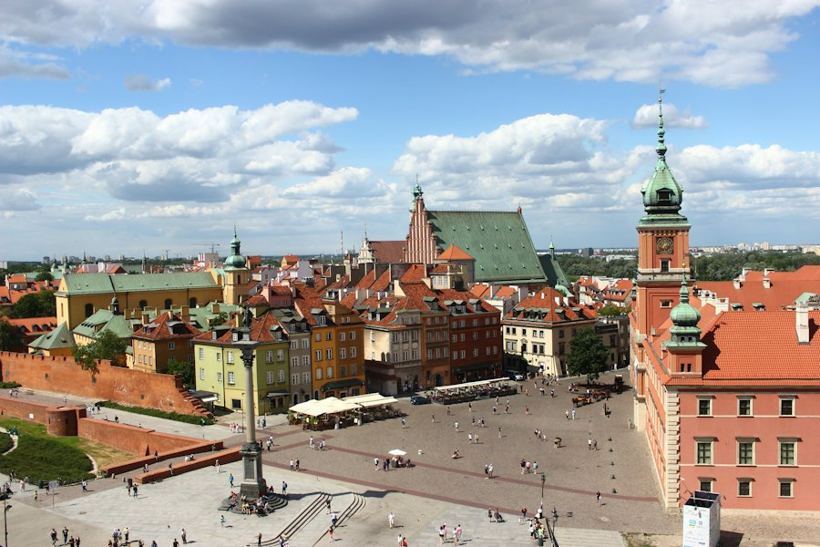

Q2 2026: ICT talent mobility from India to the EU
Demand for Indian ICT professionals rose in Germany, the Netherlands and Poland. Software engineering and cloud roles account for 61% of open positions.
Explore labour-market insights, engagement opportunities, country procedures and responsible-recruitment guidance for organisations working between India and the EU.
The Gateway provides information and signposting. It does not provide legal advice or make recruitment, sponsorship or visa decisions.
Demand for Indian ICT professionals rose in Germany, the Netherlands and Poland. Software engineering and cloud roles account for 61% of open positions.
Follow evidence on talent supply in India, demand across EU markets and emerging areas of opportunity.
Browse available market intelligence, procedures and engagement opportunities by country.
No EU country matches that name.
Poland’s ICT demand is rising fast. Explore what’s ahead while its procedural guide is being finalised.
Read more
Find country-specific procedural information and continue to the responsible national authority.
Requirements for sponsoring an EU Blue Card holder, including salary thresholds, qualification recognition and application stages.
Step-by-step guide for IND-recognised sponsors hiring from India, including salary thresholds and documentation.
Overview of the Passeport Talent permit for employers hiring qualified ICT professionals from outside the EU.
This procedural guide is being prepared and checked with the responsible authority. It will appear here once it has been reviewed.
This content summarises published information and does not constitute legal advice. Confirm the current requirements with the responsible authority.
Explore fair-recruitment practice, employer responsibilities and India-specific risks and warning signs.
Principles for transparent, fair and candidate-centred recruitment when sourcing ICT talent from India.
Read the guideThe responsibilities that apply during recruitment, selection and mobility preparation.
Read the guideWarning signs involving intermediaries, fees, misleading offers or other potentially harmful practices.
Read the guideFind upcoming activities and opportunities to connect across India and the EU.
Sponsorship obligations, salary thresholds and application stages after the 2024 Directive, with time for questions. Summaries are posted afterwards.
Reports, country guides, procedures, guidance and events, newest first.
Check the current procedure, legal requirements and forms directly with the responsible EU or Member State authority.
EU Blue Card, skilled worker permits, employer obligations
Official source · Last reviewed: 18 June 2026Continue to the official source ↗Highly skilled migrant permit, IND-recognised sponsorship
Official source · Last reviewed: 5 May 2026Continue to the official source ↗EU job mobility, cross-border employment information
Official source · Last reviewed: 1 July 2026Continue to the official source ↗This content summarises published information and does not constitute legal advice. Confirm the current requirements with the responsible authority.